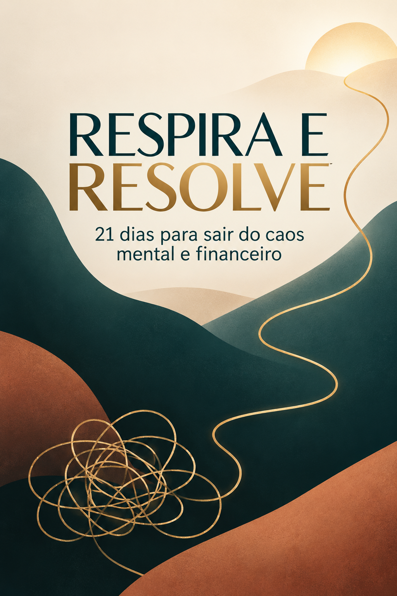

Você não precisa resolver toda a sua vida hoje. Precisa encontrar um próximo passo.
Um programa de autoconhecimento e organização emocional e financeira para reconhecer padrões, lidar melhor com a sobrecarga e transformar reflexões em pequenas atitudes possíveis — um dia de cada vez.
💭 Sem certo ou errado. Responda pelo que acontece de verdade.
🧭 O resultado não é diagnóstico. É uma ferramenta de autorreflexão.
⏱️ Você termina em cerca de 2 minutos.
Suas respostas ficam apenas nesta página e não são enviadas para nós.
Conheça o programa
21 dias para mudar a forma de olhar para si, suas escolhas e seu dinheiro.
O Respira e Resolve é um percurso guiado de reflexão e prática. Você avança no seu ritmo, com conteúdos sobre emoções, hábitos, limites e decisões financeiras — sem promessas de soluções mágicas.

Como funciona na prática?
Um tema por dia, com explicações acessíveis, exercícios de escrita e pequenas práticas para levar o aprendizado à vida real.
Primeiros 7 diasPerceba seus padrões e sua história.
Segunda semanaCompreenda emoções e comportamentos.
Terceira semanaPratique escolhas e organize os próximos passos.
Um gostinho do percurso
Ouça um trecho dos primeiros cinco dias
Estamos preparando amostras de até 3 minutos dos conteúdos originais. Enquanto isso, veja o tema de cada dia:
Dia 01
Neuroplasticidade
Como novos aprendizados e práticas podem apoiar mudanças ao longo do tempo.
Prévia: até 3 minutos
Dia 02
Sua história pessoal
Um olhar para experiências anteriores e para a forma como interpretamos nossa história.
Prévia: até 3 minutos
Dia 03
Temperamento
Conheça diferenças de estilo e de reação diante dos desafios.
Prévia: até 3 minutos
Dia 04
Crenças limitantes
Observe ideias que influenciam suas escolhas e explore novas perspectivas.
Prévia: até 3 minutos
Dia 05
Criança interior e gatilhos
Reflita sobre sentimentos e reações com mais atenção e acolhimento.
Prévia: até 3 minutos
Seu próximo passo pode começar aqui
Respira e Resolve
21 dias de reflexões, exercícios e práticas para cuidar da sua relação com as emoções, os limites e o dinheiro.
Checkout na Hotmart • Consulte as condições de compra e garantia na plataforma.
Quer refletir sobre seus padrões antes de decidir?
✦
Seu resultado
O que suas respostas sugerem
Um primeiro movimento
Se você se reconheceu aqui
Respira e Resolve
Um percurso de 21 dias para observar seus padrões, compreender sua relação emocional com dinheiro, trabalhar autossabotagem, procrastinação, limites e transformar percepção em pequenas ações reais.